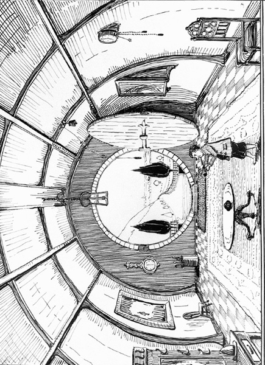
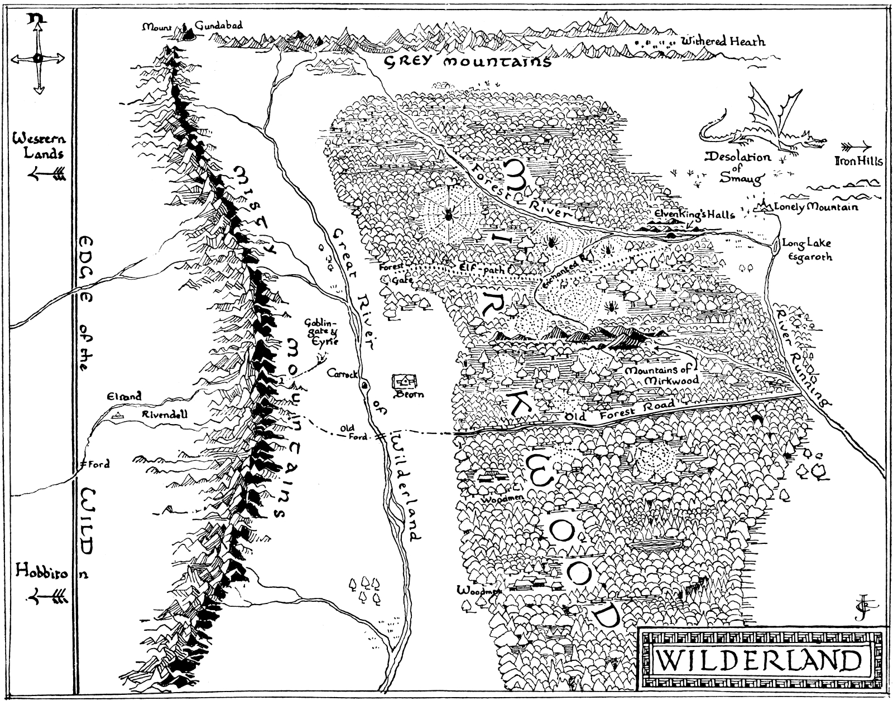

It was on May the First that the two came back at last to the brink of the valley of Rivendell, where stood the Last (or the First) Homely House. Again it was evening, their ponies were tired, especially the one that carried the baggage; and they all felt in need of rest. As they rode down the steep path, Bilbo heard the elves still singing in the trees, as if they had not stopped since he left; and as soon as the riders came down into the lower glades of the wood they burst into a song of much the same kind as before. This is something like it:
The dragon is withered,
His bones are now crumbled;
His armour is shivered,
His splendour is humbled!
Though sword shall be rusted,
And throne and crown perish
With strength that men trusted
And wealth that they cherish,
Here grass is still growing,
And leaves are yet swinging,
The white water flowing,
And elves are yet singing
Come! Tra-la-la-lally!
Come back to the valley!
The stars are far brighter
Than gems without measure,
The moon is far whiter
Than silver in treasure;
The fire is more shining
On hearth in the gloaming
Than gold won by mining,
So why go a-roaming?
O! Tra-la-la-lally
Come back to the Valley.
O! Where are you going,
So late in returning?
The river is flowing,
The stars are all burning!
O! Whither so laden,
So sad and so dreary?
Here elf and elf-maiden
Now welcome the weary
With Tra-la-la-lally
Come back to the Valley,
Tra-la-la-lally
Fa-la-la-lally
Fa-la!
Then the elves of the valley came out and greeted them and led them across the water to the house of Elrond. There a warm welcome was made them, and there were many eager ears that evening to hear the tale of their adventures. Gandalf it was who spoke, for Bilbo was fallen quiet and drowsy. Most of the tale he knew, for he had been in it, and had himself told much of it to the wizard on their homeward way or in the house of Beorn; but every now and again he would open one eye, and listen, when a part of the story which he did not yet know came in.
It was in this way that he learned where Gandalf had been to; for he overheard the words of the wizard to Elrond. It appeared that Gandalf had been to a great council of the white wizards, masters of lore and good magic; and that they had at last driven the Necromancer from his dark hold in the south of Mirkwood.
“Ere long now,” Gandalf was saying, “the Forest will grow somewhat more wholesome. The North will be freed from that horror for many long years, I hope. Yet I wish he were banished from the world!”
“It would be well indeed,” said Elrond; “but I fear that will not come about in this age of the world, or for many after.”
When the tale of their journeyings was told, there were other tales, and yet more tales, tales of long ago, and tales of new things, and tales of no time at all, till Bilbo’s head fell forward on his chest, and he snored comfortably in a corner.
He woke to find himself in a white bed, and the moon shining through an open window. Below it many elves were singing loud and clear on the banks of the stream.
Sing all ye joyful, now sing all together!
The wind’s in the tree-top, the wind’s in the heather;
The stars are in blossom, the moon is in flower,
And bright are the windows of Night in her tower.
Dance all ye joyful, now dance all together!
Soft is the grass, and let foot be like feather!
The river is silver, the shadows are fleeting;
Merry is May-time, and merry our meeting.
Sing we now softly, and dreams let us weave him!
Wind him in slumber and there let us leave him!
The wanderer sleepeth. Now soft be his pillow! Lullaby!
Lullaby! Alder and Willow!
Sigh no more Pine, till the wind of the morn!
Fall Moon! Dark be the land!
Hush! Hush! Oak, Ash, and Thorn!
Hushed be all water, till dawn is at hand!
“Well, Merry People!” said Bilbo looking out. “What time by the moon is this? Your lullaby would waken a drunken goblin! Yet I thank you.”
“And your snores would waken a stone dragon—yet we thank you,” they answered with laughter. “It is drawing towards dawn, and you have slept now since the night’s beginning. Tomorrow, perhaps, you will be cured of weariness.”
“A little sleep does a great cure in the house of Elrond,” said he; “but I will take all the cure I can get. A second good night, fair friends!” And with that he went back to bed and slept till late morning.
Weariness fell from him soon in that house, and he had many a merry jest and dance, early and late, with the elves of the valley. Yet even that place could not long delay him now, and he thought always of his own home. After a week, therefore, he said farewell to Elrond, and giving him such small gifts as he would accept, he rode away with Gandalf.
Even as they left the valley the sky darkened in the West before them, and wind and rain came up to meet them.
“Merry is May-time!” said Bilbo, as the rain beat into his face. “But our back is to legends and we are coming home. I suppose this is the first taste of it.”
“There is a long road yet,” said Gandalf.
“But it is the last road,” said Bilbo.
They came to the river that marked the very edge of the borderland of the Wild, and to the ford beneath the steep bank, which you may remember. The water was swollen both with the melting of the snows at the approach of summer, and with the daylong rain; but they crossed with some difficulty, and pressed forward, as evening fell, on the last stage of their journey.
This was much as it had been before, except that the company was smaller, and more silent; also this time there were no trolls. At each point on the road Bilbo recalled the happenings and the words of a year ago—it seemed to him more like ten—so that, of course, he quickly noted the place where the pony had fallen in the river, and they had turned aside for their nasty adventure with Tom and Bert and Bill.
Not far from the road they found the gold of the trolls, which they had buried, still hidden and untouched. “I have enough to last me my time,” said Bilbo, when they had dug it up. “You had better take this, Gandalf. I daresay you can find a use for it.”
“Indeed I can!” said the wizard. “But share and share alike! You may find you have more needs than you expect.”
So they put the gold in bags and slung them on the ponies, who were not at all pleased about it. After that their going was slower, for most of the time they walked. But the land was green and there was much grass through which the hobbit strolled along contentedly. He mopped his face with a red silk handkerchief—no! not a single one of his own had survived, he had borrowed this one from Elrond—for now June had brought summer, and the weather was bright and hot again.
As all things come to an end, even this story, a day came at last when they were in sight of the country where Bilbo had been born and bred, where the shapes of the land and of the trees were as well known to him as his hands and toes. Coming to a rise he could see his own Hill in the distance, and he stopped suddenly and said:
Roads go ever ever on,
Over rock and under tree,
By caves where never sun has shone,
By streams that never find the sea;
Over snow by winter sown,
And through the merry flowers of June,
Over grass and over stone,
And under mountains in the moon.
Roads go ever ever on
Under cloud and under star,
Yet feet that wandering have gone
Turn at last to home afar.
Eyes that fire and sword have seen
And horror in the halls of stone
Look at last on meadows green
And trees and hills they long have known.
Gandalf looked at him. “My dear Bilbo!” he said. “Something is the matter with you! You are not the hobbit that you were.”
And so they crossed the bridge and passed the mill by the river and came right back to Bilbo’s own door.
“Bless me! What’s going on?” he cried. There was a great commotion, and people of all sorts, respectable and unrespectable, were thick round the door, and many were going in and out—not even wiping their feet on the mat, as Bilbo noticed with annoyance.
If he was surprised, they were more surprised still. He had arrived back in the middle of an auction! There was a large notice in black and red hung on the gate, stating that on June the Twenty-second Messrs Grubb, Grubb, and Burrowes would sell by auction the effects of the late Bilbo Baggins Esquire, of Bag-End, Underhill, Hobbiton. Sale to commence at ten o’clock sharp. It was now nearly lunchtime, and most of the things had already been sold, for various prices from next to nothing to old songs (as is not unusual at auctions). Bilbo’s cousins the Sackville-Bagginses were, in fact, busy measuring his rooms to see if their own furniture would fit. In short Bilbo was “Presumed Dead”, and not everybody that said so was sorry to find the presumption wrong.
The return of Mr. Bilbo Baggins created quite a disturbance, both under the Hill and over the Hill, and across the Water; it was a great deal more than a nine days’ wonder. The legal bother, indeed, lasted for years. It was quite a long time before Mr. Baggins was in fact admitted to be alive again. The people who had got specially good bargains at the Sale took a deal of convincing; and in the end to save time Bilbo had to buy back quite a lot of his own furniture. Many of his silver spoons mysteriously disappeared and were never accounted for. Personally he suspected the Sackville-Bagginses. On their side they never admitted that the returned Baggins was genuine, and they were not on friendly terms with Bilbo ever after. They really had wanted to live in his nice hobbit-hole so very much.
Indeed Bilbo found he had lost more than spoons—he had lost his reputation. It is true that for ever after he remained an elf-friend, and had the honour of dwarves, wizards, and all such folk as ever passed that way; but he was no longer quite respectable. He was in fact held by all the hobbits of the neighbourhood to be ‘queer’—except by his nephews and nieces on the Took side, but even they were not encouraged in their friendship by their elders.
I am sorry to say he did not mind. He was quite content; and the sound of the kettle on his hearth was ever after more musical than it had been even in the quiet days before the Unexpected Party. His sword he hung over the mantelpiece. His coat of mail was arranged on a stand in the hall (until he lent it to a Museum). His gold and silver was largely spent in presents, both useful and extravagant—which to a certain extent accounts for the affection of his nephews and his nieces. His magic ring he kept a great secret, for he chiefly used it when unpleasant callers came.
He took to writing poetry and visiting the elves; and though many shook their heads and touched their foreheads and said “Poor old Baggins!” and though few believed any of his tales, he remained very happy to the end of his days, and those were extraordinarily long.
One autumn evening some years afterwards Bilbo was sitting in his study writing his memoirs—he thought of calling them “There and Back Again, a Hobbit’s Holiday”—when there was a ring at the door. It was Gandalf and a dwarf; and the dwarf was actually Balin.
“Come in! Come in!” said Bilbo, and soon they were settled in chairs by the fire. If Balin noticed that Mr. Baggins’ waistcoat was more extensive (and had real gold buttons), Bilbo also noticed that Balin’s beard was several inches longer, and his jewelled belt was of great magnificence.
They fell to talking of their times together, of course, and Bilbo asked how things were going in the lands of the Mountain. It seemed they were going very well. Bard had rebuilt the town in Dale and men had gathered to him from the Lake and from South and West, and all the valley had become tilled again and rich, and the desolation was now filled with birds and blossoms in spring and fruit and feasting in autumn. And Lake-town was refounded and was more prosperous than ever, and much wealth went up and down the Running River; and there was friendship in those parts between elves and dwarves and men.

The Hall at Bag-End Residence of B.Baggins Esquire
The old Master had come to a bad end. Bard had given him much gold for the help of the Lake-people, but being of the kind that easily catches such disease he fell under the dragon-sickness, and took most of the gold and fled with it, and died of starvation in the Waste, deserted by his companions.
“The new Master is of wiser kind,” said Balin, “and very popular, for, of course, he gets most of the credit for the present prosperity. They are making songs which say that in his day the rivers run with gold.”
“Then the prophecies of the old songs have turned out to be true, after a fashion!” said Bilbo.
“Of course!” said Gandalf. “And why should not they prove true? Surely you don’t disbelieve the prophecies, because you had a hand in bringing them about yourself? You don’t really suppose, do you, that all your adventures and escapes were managed by mere luck, just for your sole bene-fit? You are a very fine person, Mr. Baggins, and I am very fond of you; but you are only quite a little fellow in a wide world after all!”
“Thank goodness!” said Bilbo laughing, and handed him the tobacco-jar.
